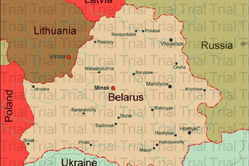

The Republic of Belarus

The republic of Belarus is situated in the center of Europe on the watershed of the Baltic and Black Seas. The capital is Minsk. Belarus borders on Poland, Lithuania, Latvia, Russia and Ukraine. The total length of the state border makes up 2,969 km. Geographic and climatic conditions favor the development of transport and economic relations. The shortest ways from Russia to Western Europe and from the Baltic Sea to the Black sea run through Belarus.
The territory of Belarus is 207.6 thousand sq km. It stretches from west to east for 650 km and from north to south for 560 km.
The country’s relief is flat with hills. The climate of Belarus is moderate continental with mild and humid winters, warm summers and damp autumns.